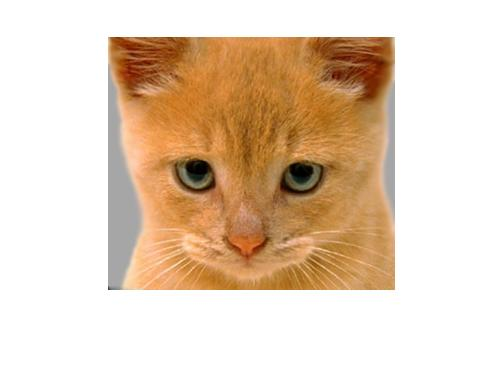
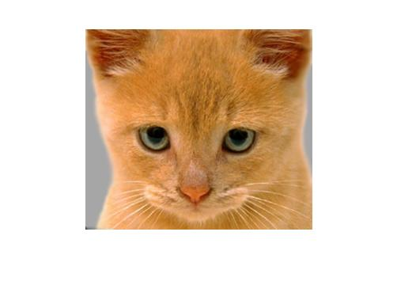
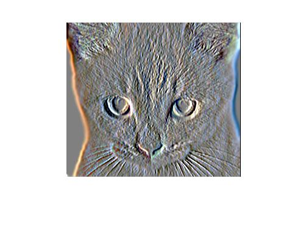
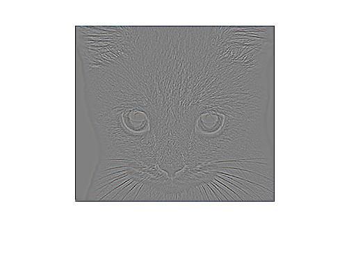
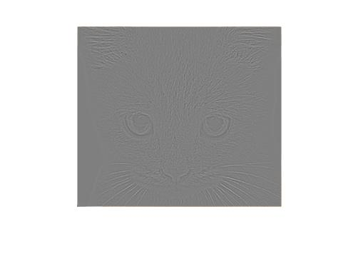

Project 1: Image Filtering and Hybrid Images

Hybrid Image( cat+dog )
Filtering Images
The Input image is passed through different filters and the results are presented below.
There are two functions used in the implemention of this project:
- Filtering function: performs the convolution between the given filter (low pass) and the image
- Visualization function: Displays the resulting hybrid image at different resolutions
Filtering function: my_imfilter()
The function takes two inputs, the filter and the image to be filtered. The filter dimensions are first confirmed to be odd. A new image is obtained by zero padding the original image according to the dimensions of the filter. Reflection is performed across the vertical edges and then across the horizontal edges to give values to the padded pixels. Reflection is done to give a smooth image after filtering. At each pixel position, element-wise matrix multiplication is done between the filter and a section of the image, of same size as the filter, centred at that pixel. The sum of all the elements gives the value to be placed in the resulting filtered image matrix. By iterating over every pixel in the image, the output filtered image matrix is obtained, which is of the same dimensions as the input image.
Building the code
The task was to write a code for the image to run the different filters effectively.The image and the filter were function input arguments. I started off with a test code for the filter where my image was a randomly generated 5X5 matrix and the filter was a 3X3 identity filter.The reason behind choosing the identity filter, it was easier to compare the input and the output. The next step was to figure out the padding of the image to use the filter over the image properly.Since it was (odd X odd) filter,it was relatively easier to pad the image and I used the padarray function in matlab. The image was padded with zeroes so that the content of the image is not lost in the filtering process. Now, I had an image padded with zeroes and an identity filter. The next task was to write a code to slide the filter over the image, compute and store the values in the output image matrix.Initially I wrote the code considering my image which was a gray image using two for loops where I ran i and j from 1+(size of the padding) to (size of padding)+( size of the image). Similar loop for j as well. This is so that the filter starts from the corner of the padded image and continues sliding. The computed value is then stored in the output image matrix. After the test run was successful, I had to write a generic code an RGB image. I took the inputs from the project_test_filtering.m and computed the size of the image and the filter. Then computed the pad array size to pad the image.The image now was a padded image but the output had to be the same size as the input image and hence the output indices are manupilated accordingly.
 

|
|    |
The images are arranged in the order : 1.Input Image without filtering. 2.Bilinear Filter 3.Identity Filter 4. SmallBlur Filter 5.LargeBlur Filter 6.Sobel Filter 7.Highpass Filter 8.Highpass(alternative) Filter.
Example of code
for k = 1: s(3)
for i= 1+l :l+s(1)
for j= 1+m : m+s(2)
temp = image ((i-l): (i+l) , (j-m) : (j+m), k) .* filter;
output(i-l,j-m,k) = sum(sum(temp));
end
end
end
Hybrid Filtering
A hybrid image is a picture that combines the low-spatial frequencies of one picture with the high spatial frequencies of another picture producing an image with an interpretation that changes with viewing distance.This project implements the concept of hybrid images, obtained by combining the low frequency content of one image with the high frequency content of a second image. A Gaussian low pass filter is used to generate the blurred, low frequency version of the first image. The size and standard deviation of the filter are adjusted manually to obtain the best results for each pair of images. To generate the high frequency components of the second image, the low pass filtered image is subtracted from the original. The low and high frequency images thus obtained are combined into a single image using a simple addition operation. Displaying this resultant image at different resolutions allows us to prominently see the second image (high frequency) at high resolutions and the first image (low frequency) at low resolutions.
Example of code
low_frequencies = my_imfilter(image1,filter);
high_frequencies = image2 - my_imfilter(image2,filter);
hybrid_image = high_frequencies + low_frequencies;
Visualization Function
This function constructs a composite image consisting of scaled versions of the hybrid image. The scaling allows the high frequency image to be seen at higher resolutions and the low frequency image to be seen at lower resoltions.
Results


|
Above are the intermediate images obtained during the execution of the algorithm. The low frequency version of the fish is combined with the high freqency version of the submarine to get the hybrid image. The final image in the panel shows the hybrid image scaled to different sizes. As the size gets smaller, the fish becomes visible and the submarine is hidden. Problems Encountered: While creating hybrid images, the cut off frequency needs to be changed accordingly for each set of images. This process of tuning the frequency takes a bit of time because my Matlab code would stop functioning after the first run and I had to reload the program to run the filtering again.


|


|
This set of images shows the hybrid image generation algorithm applied to other pairs of images. For each hybrid image, the corresponding scaled visualization is shown.